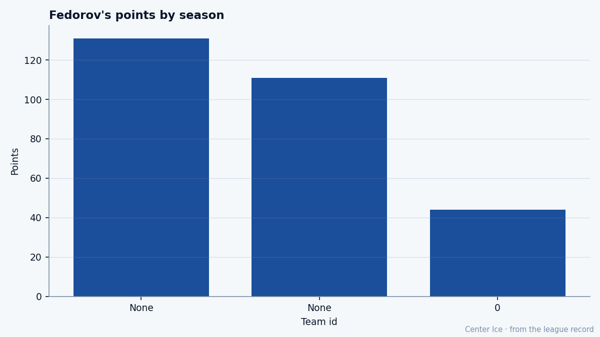

Potential 61, Base 94: Sergei Fedorov at 36 and the Worst Number in the Book
The 74th pick of 1989 is scoring at a 113-point pace at Anaheim, a club nobody writes about, and the Bureau says he can never be this good again.
 Tomáš VránaProfile writer · The Sweater
Tomáš VránaProfile writer · The Sweater Sergei Fedorov90 is 36 years old. He is third in the league in goals, first among centers in points, and the Bureau's Development Index has him at 86 today, one point below his base of 94. His ceiling, the number the League Scouting Bureau publishes alongside every man's grade, is 61. Thirty-three grades below what he is doing right now, on the ice, tonight, wearing the number 91 sweater of a team in the Pacific Division that has won six in a row and plays in front of a building nobody in the other divisions thinks about.
Sergei Fedorov90 is 36 years old. He is third in the league in goals, first among centers in points, and the Bureau's Development Index has him at 86 today, one point below his base of 94. His ceiling, the number the League Scouting Bureau publishes alongside every man's grade, is 61. Thirty-three grades below what he is doing right now, on the ice, tonight, wearing the number 91 sweater of a team in the Pacific Division that has won six in a row and plays in front of a building nobody in the other divisions thinks about.

He has been at  Mighty Ducks of Anaheim for as long as the record knows. The transactions place him there before December 2004, which means he arrived in Anaheim the way a man moves house in winter: quietly, with the lights already on in the next city. The record carries three seasons for him. The first produced 131 points in 82 games. The second, 111 in 82. This one, after 32 games, sits at 44 points and 29 goals, which is a 113-point pace over 82 games and the fifth-highest mark in the league.
Mighty Ducks of Anaheim for as long as the record knows. The transactions place him there before December 2004, which means he arrived in Anaheim the way a man moves house in winter: quietly, with the lights already on in the next city. The record carries three seasons for him. The first produced 131 points in 82 games. The second, 111 in 82. This one, after 32 games, sits at 44 points and 29 goals, which is a 113-point pace over 82 games and the fifth-highest mark in the league.
Pskov to Portland to Detroit
Fedorov was born in Pskov, Russia, on December 13, 1969. The Soviet national team came to Portland for the 1990 Goodwill Games and he walked away from it on July 22, at the Memorial Coliseum, after an exhibition match. He was 20. The Red Wings had drafted him the year before, 74th overall, in the third round. In August 1989 a Detroit representative had met him and Vladimir Konstantinov, another Wings pick, and handed them each a media guide with a letter inside. That was the beginning of the arrangement.
What followed in Detroit is the public record everyone knows. The Hart Trophy in 1993-94. Gretzky, watching a December game against the Rangers that season, said he had never seen a player dominate the way Fedorov did. The Selke in 1996, the year he scored 39 goals and 107 points and played defense well enough to win a trophy for it. Two Cups, 1997 and 1998. Five goals in one game against Washington on December 26, 1996, carrying Detroit to a 5-4 overtime win. The Carolina offer sheet in 1998, worth up to $38 million, the one with the $12 million bonus that could only be collected if the team made the conference finals, which was a clause written for a contender by a man who had just signed with a team that was not going anywhere.
He was drafted 74th. He won a Hart, a Selke, two Stanley Cups, and the Lester B. Pearson Award in the first season the record carries. And the Bureau, in its current edition, says his ceiling is 61.
What the grades say
Fedorov's Book grades are these: Deking 93, Speed 91, Passing 90, Puck Control 90, Hero 88, Shot Power 88. His Fighting grade is 50. His Injury resistance is 50. His Shot Blocking is 52. The gap between his top number and his bottom number is 43 grades. He is a man built for one thing and the Bureau recorded it without apology.
The Faceoffs grade of 81 means he wins his draws. The Speed of 91 at 36 means he has not slowed enough for it to matter. The Puck Control of 90 means the puck stays on his stick when he is carrying it through the neutral zone, and on a team whose second-best forward carries a 75, that matters more than it should. He logs 22.3 minutes a night and the team is 10-13-1 with 37 points and the longest active win streak in the Pacific.
The contract reads $6.30M with 3 years left. That is $18.90M guaranteed to a man whose Potential the Bureau set 33 grades below his current base. The club that signed this has, by the Book's measure, a top player whose ceiling is 61 and a second player,  Jean-Sebastien Giguere97, rated 93. The gap between Giguere and the third-best man on the roster is 18 grades. The gap between Fedorov and the third-best forward is 11. This is a team built on two bodies and a 6-game heater.
Jean-Sebastien Giguere97, rated 93. The gap between Giguere and the third-best man on the roster is 18 grades. The gap between Fedorov and the third-best forward is 11. This is a team built on two bodies and a 6-game heater.
What the room would say
A man on $6.30M, 3 years left, 36 years old, carrying a 113-point pace, whose ceiling the Bureau set at 61, has a Morale grade of 97. He defected from a country that would not let him leave, played 15 seasons on two continents, and now skates 22.3 minutes a night in a building where the crowd arrives late because the freeway is bad. The ceiling has sat 33 grades below the level he has been playing at for three consecutive seasons. He is not angry, and he is not going anywhere.
The Potential of 61 was probably set when he was younger, maybe 19, maybe 20, a number the Bureau calculated from a 74th-round pick from a country that did not play by the rules they understood. It has never been updated. It sits in the book like a stone in a shoe.
He scored 29 goals in 32 games. The season is not over. The 6-game streak will end. And somewhere in the Bureau's filing system, a number says he cannot be this good.
He has been being this good for three years.